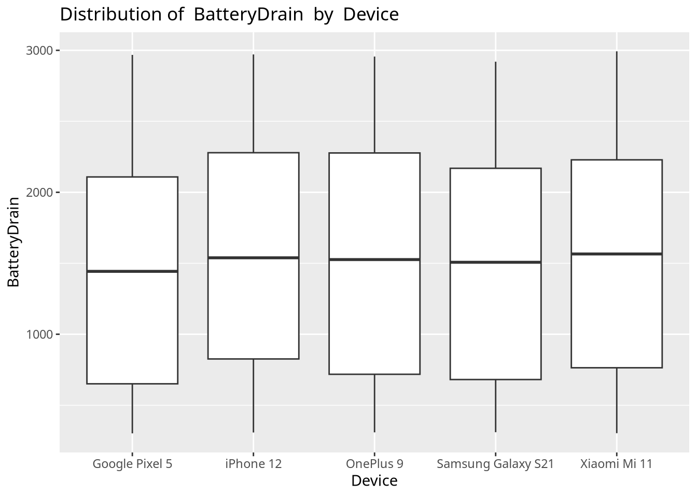

suppressPackageStartupMessages(library(tidyverse))
library(RKaggle)
library(ggthemes)
library(ggpointdensity)
library(knitr)Project 2 EDA
Preprocessing
Read in and Process Data
raw_df <- RKaggle::get_dataset("valakhorasani/mobile-device-usage-and-user-behavior-dataset") Rows: 700 Columns: 11
── Column specification ────────────────────────────────────────────────────────
Delimiter: ","
chr (3): Device Model, Operating System, Gender
dbl (8): User ID, App Usage Time (min/day), Screen On Time (hours/day), Batt...
ℹ Use `spec()` to retrieve the full column specification for this data.
ℹ Specify the column types or set `show_col_types = FALSE` to quiet this message.df <- raw_df |> as_tibble() |>
rename("ID" = "User ID", "Device" = "Device Model", "OS" = "Operating System",
"AppUsage" = "App Usage Time (min/day)", "ScreenTime" = "Screen On Time (hours/day)",
"BatteryDrain" = "Battery Drain (mAh/day)", "NumApps" = "Number of Apps Installed",
"DataUsage" = "Data Usage (MB/day)", "UserClass" = "User Behavior Class") |>
mutate(ScreenTime = ScreenTime*60, UserClass = factor(UserClass))Contingency Tables
options(dplyr.summarise.inform = FALSE)
df |> group_by(UserClass) |> summarize(count = n()) |>
pivot_wider(names_from = UserClass, values_from = count) |> kable()| 1 | 2 | 3 | 4 | 5 |
|---|---|---|---|---|
| 136 | 146 | 143 | 139 | 136 |
df |> group_by(UserClass, Device) |> summarize(count = n()) |>
pivot_wider(names_from = UserClass, values_from = count) |> kable()| Device | 1 | 2 | 3 | 4 | 5 |
|---|---|---|---|---|---|
| Google Pixel 5 | 32 | 26 | 33 | 24 | 27 |
| OnePlus 9 | 25 | 31 | 25 | 26 | 26 |
| Samsung Galaxy S21 | 26 | 30 | 21 | 33 | 23 |
| Xiaomi Mi 11 | 31 | 27 | 32 | 27 | 29 |
| iPhone 12 | 22 | 32 | 32 | 29 | 31 |
df |> group_by(UserClass, Gender) |> summarize(count = n()) |>
pivot_wider(names_from = UserClass, values_from = count) |> kable()| Gender | 1 | 2 | 3 | 4 | 5 |
|---|---|---|---|---|---|
| Female | 63 | 64 | 82 | 67 | 60 |
| Male | 73 | 82 | 61 | 72 | 76 |
df |> group_by(Device, Gender) |> summarize(count = n()) |>
pivot_wider(names_from = Device, values_from = count) |> kable()| Gender | Google Pixel 5 | OnePlus 9 | Samsung Galaxy S21 | Xiaomi Mi 11 | iPhone 12 |
|---|---|---|---|---|---|
| Female | 69 | 61 | 54 | 78 | 74 |
| Male | 73 | 72 | 79 | 68 | 72 |
Numerical Summaries
summarize_numeric <- function(df, group, num_var) {
return(
df |> group_by({{group}}) |> summarize("count" = n(), across(all_of(num_var),
list("mean" = mean, "sd" = sd, "IQR" = ~ quantile(., 0.75) - quantile(., 0.25),
"range" = ~ max(.) - min(.) , "min" = min,
"Q1" = ~ quantile(., 0.25), "median" = median, "Q3" = ~ quantile(., 0.25),
"max" = max), .names = "{.col}_{.fn}")) |> kable()
)
}
map(df |> select(!all_of(c("ID", "UserClass")) & where(is.numeric)) |> colnames(),
\(x) summarize_numeric(df, Device, x))[[1]]
|Device | count| AppUsage_mean| AppUsage_sd| AppUsage_IQR| AppUsage_range| AppUsage_min| AppUsage_Q1| AppUsage_median| AppUsage_Q3| AppUsage_max|
|:------------------|-----:|-------------:|-----------:|------------:|--------------:|------------:|-----------:|---------------:|-----------:|------------:|
|Google Pixel 5 | 142| 267.7887| 180.0313| 344.50| 561| 34| 99.00| 231.5| 99.00| 595|
|OnePlus 9 | 133| 270.3835| 183.4941| 328.00| 568| 30| 105.00| 216.0| 105.00| 598|
|Samsung Galaxy S21 | 133| 266.4211| 175.2646| 303.00| 563| 30| 111.00| 217.0| 111.00| 593|
|Xiaomi Mi 11 | 146| 268.4521| 179.7659| 333.75| 566| 31| 102.00| 217.0| 102.00| 597|
|iPhone 12 | 146| 282.0205| 169.5924| 289.50| 565| 32| 142.25| 257.5| 142.25| 597|
[[2]]
|Device | count| ScreenTime_mean| ScreenTime_sd| ScreenTime_IQR| ScreenTime_range| ScreenTime_min| ScreenTime_Q1| ScreenTime_median| ScreenTime_Q3| ScreenTime_max|
|:------------------|-----:|---------------:|-------------:|--------------:|----------------:|--------------:|-------------:|-----------------:|-------------:|--------------:|
|Google Pixel 5 | 142| 304.5634| 185.8372| 288.0| 642| 66| 121.5| 285| 121.5| 708|
|OnePlus 9 | 133| 314.4812| 185.0741| 288.0| 654| 66| 150.0| 282| 150.0| 720|
|Samsung Galaxy S21 | 133| 319.0827| 184.7655| 270.0| 648| 60| 168.0| 300| 168.0| 708|
|Xiaomi Mi 11 | 146| 317.5890| 188.8851| 298.5| 648| 66| 145.5| 294| 145.5| 714|
|iPhone 12 | 146| 325.8493| 177.9198| 276.0| 654| 60| 174.0| 303| 174.0| 714|
[[3]]
|Device | count| BatteryDrain_mean| BatteryDrain_sd| BatteryDrain_IQR| BatteryDrain_range| BatteryDrain_min| BatteryDrain_Q1| BatteryDrain_median| BatteryDrain_Q3| BatteryDrain_max|
|:------------------|-----:|-----------------:|---------------:|----------------:|------------------:|----------------:|---------------:|-------------------:|---------------:|----------------:|
|Google Pixel 5 | 142| 1475.676| 809.3540| 1457.00| 2666| 302| 651| 1443.0| 651| 2968|
|OnePlus 9 | 133| 1523.850| 835.1512| 1559.00| 2647| 309| 718| 1526.0| 718| 2956|
|Samsung Galaxy S21 | 133| 1504.571| 820.7009| 1488.00| 2610| 310| 681| 1507.0| 681| 2920|
|Xiaomi Mi 11 | 146| 1528.877| 821.4425| 1464.50| 2690| 303| 764| 1565.5| 764| 2993|
|iPhone 12 | 146| 1589.514| 817.1760| 1452.75| 2663| 308| 826| 1538.5| 826| 2971|
[[4]]
|Device | count| NumApps_mean| NumApps_sd| NumApps_IQR| NumApps_range| NumApps_min| NumApps_Q1| NumApps_median| NumApps_Q3| NumApps_max|
|:------------------|-----:|------------:|----------:|-----------:|-------------:|-----------:|----------:|--------------:|----------:|-----------:|
|Google Pixel 5 | 142| 49.90845| 27.10079| 43.0| 89| 10| 26.75| 48| 26.75| 99|
|OnePlus 9 | 133| 49.96992| 26.72190| 46.0| 89| 10| 28.00| 46| 28.00| 99|
|Samsung Galaxy S21 | 133| 50.80451| 26.92089| 50.0| 89| 10| 25.00| 51| 25.00| 99|
|Xiaomi Mi 11 | 146| 49.92466| 27.20119| 51.0| 88| 10| 23.75| 49| 23.75| 98|
|iPhone 12 | 146| 52.72603| 27.01482| 48.5| 89| 10| 28.25| 52| 28.25| 99|
[[5]]
|Device | count| DataUsage_mean| DataUsage_sd| DataUsage_IQR| DataUsage_range| DataUsage_min| DataUsage_Q1| DataUsage_median| DataUsage_Q3| DataUsage_max|
|:------------------|-----:|--------------:|------------:|-------------:|---------------:|-------------:|------------:|----------------:|------------:|-------------:|
|Google Pixel 5 | 142| 897.7042| 643.8852| 932.50| 2376| 105| 342.5| 791.0| 342.5| 2481|
|OnePlus 9 | 133| 911.1203| 621.4013| 988.00| 2374| 103| 371.0| 828.0| 371.0| 2477|
|Samsung Galaxy S21 | 133| 931.8722| 645.7942| 980.00| 2372| 109| 392.0| 861.0| 392.0| 2481|
|Xiaomi Mi 11 | 146| 940.1644| 670.8048| 999.25| 2395| 102| 351.0| 820.5| 351.0| 2497|
|iPhone 12 | 146| 965.5068| 624.7464| 956.75| 2305| 111| 424.5| 907.0| 424.5| 2416|
[[6]]
|Device | count| Age_mean| Age_sd| Age_IQR| Age_range| Age_min| Age_Q1| Age_median| Age_Q3| Age_max|
|:------------------|-----:|--------:|--------:|-------:|---------:|-------:|------:|----------:|------:|-------:|
|Google Pixel 5 | 142| 37.76761| 12.07287| 22.00| 41| 18| 27| 36| 27| 59|
|OnePlus 9 | 133| 38.87970| 11.58371| 20.00| 40| 19| 29| 40| 29| 59|
|Samsung Galaxy S21 | 133| 39.11278| 12.38869| 23.00| 41| 18| 28| 39| 28| 59|
|Xiaomi Mi 11 | 146| 37.76712| 11.65365| 20.75| 41| 18| 28| 37| 28| 59|
|iPhone 12 | 146| 38.95890| 12.43015| 22.00| 41| 18| 29| 39| 29| 59|map(df |> select(!all_of(c("ID", "UserClass")) & where(is.numeric)) |> colnames(),
\(x) summarize_numeric(df, UserClass, x))[[1]]
|UserClass | count| AppUsage_mean| AppUsage_sd| AppUsage_IQR| AppUsage_range| AppUsage_min| AppUsage_Q1| AppUsage_median| AppUsage_Q3| AppUsage_max|
|:---------|-----:|-------------:|-----------:|------------:|--------------:|------------:|-----------:|---------------:|-----------:|------------:|
|1 | 136| 60.42647| 17.24706| 29.00| 59| 30| 46.00| 64.0| 46.00| 89|
|2 | 146| 131.97260| 25.46856| 44.25| 88| 91| 107.75| 131.5| 107.75| 179|
|3 | 143| 235.39860| 34.05963| 58.00| 118| 181| 206.50| 229.0| 206.50| 299|
|4 | 139| 395.74820| 52.23832| 95.00| 177| 301| 347.50| 405.0| 347.50| 478|
|5 | 136| 541.41912| 31.13711| 50.25| 117| 481| 516.00| 540.0| 516.00| 598|
[[2]]
|UserClass | count| ScreenTime_mean| ScreenTime_sd| ScreenTime_IQR| ScreenTime_range| ScreenTime_min| ScreenTime_Q1| ScreenTime_median| ScreenTime_Q3| ScreenTime_max|
|:---------|-----:|---------------:|-------------:|--------------:|----------------:|--------------:|-------------:|-----------------:|-------------:|--------------:|
|1 | 136| 89.42647| 16.84247| 25.5| 60| 60| 76.5| 90| 76.5| 120|
|2 | 146| 182.26027| 35.86278| 64.5| 120| 120| 150.0| 186| 150.0| 240|
|3 | 143| 297.35664| 35.47235| 54.0| 120| 240| 270.0| 294| 270.0| 360|
|4 | 139| 414.56115| 34.62514| 60.0| 114| 360| 384.0| 414| 384.0| 474|
|5 | 136| 606.88235| 68.08438| 115.5| 234| 486| 550.5| 618| 550.5| 720|
[[3]]
|UserClass | count| BatteryDrain_mean| BatteryDrain_sd| BatteryDrain_IQR| BatteryDrain_range| BatteryDrain_min| BatteryDrain_Q1| BatteryDrain_median| BatteryDrain_Q3| BatteryDrain_max|
|:---------|-----:|-----------------:|---------------:|----------------:|------------------:|----------------:|---------------:|-------------------:|---------------:|----------------:|
|1 | 136| 454.9779| 89.21447| 162.25| 292| 302| 375.0| 456.0| 375.0| 594|
|2 | 146| 883.8082| 186.56567| 324.00| 596| 602| 716.5| 894.5| 716.5| 1198|
|3 | 143| 1515.0559| 167.32387| 292.00| 581| 1210| 1369.0| 1512.0| 1369.0| 1791|
|4 | 139| 2105.8058| 169.51093| 281.50| 596| 1802| 1974.5| 2102.0| 1974.5| 2398|
|5 | 136| 2701.0147| 176.91278| 311.75| 590| 2403| 2545.5| 2717.5| 2545.5| 2993|
[[4]]
|UserClass | count| NumApps_mean| NumApps_sd| NumApps_IQR| NumApps_range| NumApps_min| NumApps_Q1| NumApps_median| NumApps_Q3| NumApps_max|
|:---------|-----:|------------:|----------:|-----------:|-------------:|-----------:|----------:|--------------:|----------:|-----------:|
|1 | 136| 14.55882| 2.900229| 5| 9| 10| 12| 15.0| 12| 19|
|2 | 146| 30.75342| 5.644114| 10| 18| 21| 26| 31.5| 26| 39|
|3 | 143| 50.00000| 5.505439| 10| 18| 41| 45| 49.0| 45| 59|
|4 | 139| 69.92086| 5.420125| 9| 18| 61| 66| 69.0| 66| 79|
|5 | 136| 89.25000| 5.483646| 9| 18| 81| 84| 89.0| 84| 99|
[[5]]
|UserClass | count| DataUsage_mean| DataUsage_sd| DataUsage_IQR| DataUsage_range| DataUsage_min| DataUsage_Q1| DataUsage_median| DataUsage_Q3| DataUsage_max|
|:---------|-----:|--------------:|------------:|-------------:|---------------:|-------------:|------------:|----------------:|------------:|-------------:|
|1 | 136| 202.3235| 61.41913| 116.50| 197| 102| 146.00| 202| 146.00| 299|
|2 | 146| 451.4178| 90.60051| 163.25| 298| 301| 370.25| 450| 370.25| 599|
|3 | 143| 822.0140| 114.22112| 195.00| 389| 608| 720.50| 828| 720.50| 997|
|4 | 139| 1232.2302| 146.19227| 263.50| 497| 1002| 1096.00| 1209| 1096.00| 1499|
|5 | 136| 1974.7721| 297.45511| 477.50| 989| 1508| 1715.00| 1935| 1715.00| 2497|
[[6]]
|UserClass | count| Age_mean| Age_sd| Age_IQR| Age_range| Age_min| Age_Q1| Age_median| Age_Q3| Age_max|
|:---------|-----:|--------:|--------:|-------:|---------:|-------:|------:|----------:|------:|-------:|
|1 | 136| 38.21324| 11.28382| 17.0| 41| 18| 29.0| 37| 29.0| 59|
|2 | 146| 38.64384| 11.59592| 21.0| 41| 18| 28.0| 39| 28.0| 59|
|3 | 143| 38.67832| 12.80383| 23.5| 41| 18| 27.0| 38| 27.0| 59|
|4 | 139| 38.67626| 12.65210| 24.5| 41| 18| 25.5| 40| 25.5| 59|
|5 | 136| 38.17647| 11.79446| 21.0| 41| 18| 28.0| 37| 28.0| 59|Correlation Matrix
df |> select(where(is.numeric) & !c("ID")) |> cor() |> kable()| AppUsage | ScreenTime | BatteryDrain | NumApps | DataUsage | Age | |
|---|---|---|---|---|---|---|
| AppUsage | 1.0000000 | 0.9503330 | 0.9563850 | 0.9552528 | 0.9423075 | 0.0043822 |
| ScreenTime | 0.9503330 | 1.0000000 | 0.9489831 | 0.9469751 | 0.9413220 | 0.0172322 |
| BatteryDrain | 0.9563850 | 0.9489831 | 1.0000000 | 0.9618533 | 0.9322758 | -0.0027224 |
| NumApps | 0.9552528 | 0.9469751 | 0.9618533 | 1.0000000 | 0.9348000 | 0.0040340 |
| DataUsage | 0.9423075 | 0.9413220 | 0.9322758 | 0.9348000 | 1.0000000 | 0.0039989 |
| Age | 0.0043822 | 0.0172322 | -0.0027224 | 0.0040340 | 0.0039989 | 1.0000000 |
Scatter Plots
df |> ggplot(aes(x = AppUsage, y = ScreenTime, color = UserClass)) + geom_point() +
labs(x = "App Usage (minutes/day)", y = "Screen Time (minutes/day)",
color = "User Behavior Class", title = "Screen Time vs App Usage by User Behavior Class") df |> ggplot(aes(x = BatteryDrain, y = NumApps, color = Device)) + geom_point() +
labs(x = "Battery Drain (mAh/day)", y = "Number of Apps Installed", color = "Device Model",
title = "Battery Drain vs Number of Apps by Device Model") Boxplots
df |> ggplot(aes(x = UserClass, y = Age)) + geom_boxplot() + facet_grid( ~ Gender) +
labs(x = "User Behavior Class", y = "Age (years)",
title = "Distriubtion of Age By User Class and Gender")df |> ggplot(aes(x = Device, y = Age)) + geom_boxplot() + facet_grid( ~ Gender) +
labs(x = "Device Model", y = "Age (years)",
title = "Distriubtion of Age By Device Model and Gender") +
scale_x_discrete(labels = scales::wrap_format(12))
boxplot_numeric <- function(df, group, num_var) {
return(
df |> ggplot(aes(x = get(group), y = get(num_var))) + geom_boxplot() +
labs(x = group, y = num_var, title = paste("Distribution of ", num_var, " by ", group))
)
}
map(df |> select(-c("ID") & where(is.numeric)) |> colnames(),
\(x) boxplot_numeric(df, "Device", x))[[1]]
[[2]]
[[3]]
[[4]]
[[5]]
[[6]]map(df |> select(-c("ID") & where(is.numeric)) |> colnames(),
\(x) boxplot_numeric(df, "UserClass", x))[[1]]
[[2]]
[[3]]
[[4]]
[[5]]
[[6]]Density Scatter Plots
df |> ggplot(aes(x = Age, y = ScreenTime, fill = UserClass)) + ggdensity::geom_hdr() +
geom_point(shape = 21) + labs(x = "Age (years)", y = "Screen Time (minutes/day)",
title = "Probabilty Density of Age vs Screentime by User Class")df |> ggplot(aes(x = Age, y = ScreenTime, fill = Device)) + ggdensity::geom_hdr() +
geom_point(shape = 21) + labs(x = "Age (years)", y = "Screen Time (minutes/day)",
title = "Probabilty Density of Age vs Screentime by Device Model")df |> ggplot(aes(x = Age, y = ScreenTime, fill = Device)) + ggdensity::geom_hdr() +
geom_point(shape = 21) + facet_wrap(~ OS, nrow = 2) +
labs(x = "Age (years)",y = "Screen Time (minutes/day)",
title = "Probabilty Density of Age vs Screentime by Device and Operating System")